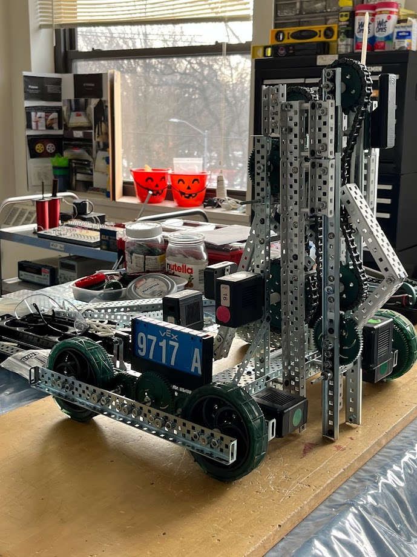

Since that lab four years ago, I’ve been doing all I can to succeed as an engineer and as a good person. I've researched and experienced many different kinds of engineering to find where I want to start, and that's how I fell in love with electrical engineering. I went to a private Catholic school on scholarship to have a better opportunity than I would at a public high school in my area. I know I can change people’s lives, maybe even change the world. There's only so much I can say to convince you to give me this chance; therefore, my work must stand for itself.
VEX
2024 - 2025 Season
During this season, I led the design and building process for robot 9717A seen in this video!
2024 Journal
Documents all brainstorming, designing, coding, cading, and building that took place this year
23'-24' Season
This seasons robot in action
22'-23' Season
Presentation of my junior year on the team
Our favorite mech on the robot, the string shooter. We had to take the robot apart to make this year's robot.
21'-22' Season
Sophmore year on the team. There was no team my freshman year because of covid
Robot built sophmore year
SOFTBALL

Sports awards ceremony where I received a medal, pin, and award for my time on varsity softball
Me after I hit a triple to bring two teammates home
Award recieved from our softball leauge for our team placing second in the city chamionship.
The following are some pictures of me and my team at our games.
STEM RELATED PROJECTS
Computer Build
My freshman year, I really wanted a computer, but it was super expensive to get a pre-built computer.
I saved up until my sophomore year of HS, researched how to build it, what to buy, and ultimately pulled it off.
This is my setup's finished product. I never have any issues and take comfort in knowing I can always upgrade my parts.
Knex and Lego Technics
Circus Display, freshman
Ferris Wheel, sophmore
Eiffel tower, junior

Pneumatic candy wrapper, senior
Shift stick, senior
School Labs
Traffic light circuit + code
Lego build that can be programmed to move the pencil left and right, and the paper up and down to write.
Block code we used
Girls Who Code
Series of projects teaching us HTML, CSS, and JS. These were some of my favorites. I used what I learned that summer to code the website you're on right now!!
3D CAD
3D model 2023 season robot
Tinkercad circuit programmed to say happy birthday. Made for a friend
Prosthetic hand 3D model
Circuit of a bumper car
SUMMER OUTREACH
Cyber Truck built using cardboard, glue, rubber bands, and construction paper. Then wired and programmed within 6 hours. Has additional code to drive straight. Won first place in the mario kart race at RPI's SHPE Summer Immersion!
Learning of material science/engineering
Learning circuit building
Learning to make chip and solder it
My friend and I working on our project at the summer outreach
MARTIAL ARTS
My favorite capoeira kick, the amada martelo
MUSIC
Me as a child with my first guitar. I still own it and it's still too big for me!
My instruments, either handed down, bought used, or offered to me by my middle school.